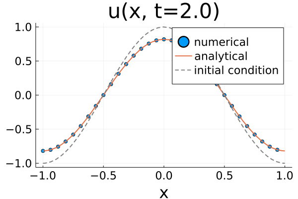

Problem
Everything needed to solve a PDE in FourierFlows.jl is gathered in a Problem struct. T he Problem struct contains various other structs, namely:
- grid (
grid), - parameters (
params), - variables (
vars), - equation details (
eqn), - timestepper (
timestepper), - clock (
clock), and - state vector (
sol).
Here, we demonstrate how we can construct such a Problem struct to solve the simple 1D equation:
\[\partial_t u(x, t) = - \alpha \, u(x, t) ,\]
on domain $x \in [-1, 1]$.
First, we construct our grid
using FourierFlows
nx, Lx = 32, 2.0
grid = OneDGrid(nx, Lx)OneDimensionalGrid ├─────────── Device: CPU ├──────── FloatType: Float64 ├────────── size Lx: 2.0 ├──── resolution nx: 32 ├── grid spacing dx: 0.0625 ├─────────── domain: x ∈ [-1.0, 0.9375] └─ aliased fraction: 0.3333333333333333
Our problem has a parameter $\alpha$. We create a Params struct by:
struct Params <: AbstractParams
α :: Float64
endand then we use the struct's constructor to populate our struct with the parameter value, e.g., $\alpha = 0.1$:
α = 0.1
params = Params(α)Parameters └───── parameter: α -> Float64
The particular equation is so simple that it makes no difference performance-wise whether we time-step it in physical or in wavenumber space. For PDEs with nonlinear terms, time-stepping in wavenumber space is much more efficient. Thus, for demonstration purposes, we will time-step the equation in wavenumber space, i.e.,
\[\partial_t \hat{u}(k, t) = - \alpha \, \hat{u}(k, t) .\]
The variables involved are $u$ and its Fourier transform $\hat{u}$. Thus, we construct the vars struct as:
struct Vars <: AbstractVars
u :: Array{Float64,1}
uh :: Array{Complex{Float64}, 1}
endand, like before, we use the struct's constructor to populate the struct with zero arrays,
vars = Vars(zeros(Float64, (grid.nx,)), zeros(Complex{Float64}, (grid.nkr,)))Variables
├───── variable: u -> 32-element Array{Float64,1}
└───── variable: uh -> 17-element Array{Complex{Float64},1}
Note that the Fourier transform of a real-valued array u is complex-valued. Also because we use the real Fourier transform, the array uh is smaller.
In this simple example our state variable is simply uh, i.e., sol = uh.
Next we need to construct the equation struct. Equation contains the linear coefficients for the linear part of the PDE, stored in an array L, and the function calcN!() that calculates the nonlinear terms from the state variable sol. In our case, our equation is linear and, therefore,
L = - params.α * ones(grid.nkr)and
function calcN!(N, sol, t, clock, vars, params, grid)
@. N = 0
return nothing
endNote that calcN!() needs to have the above argument structure. With L and calcN! in hand we can construct our problem's equation:
equation = FourierFlows.Equation(L, calcN!, grid)Equation
├──────── linear coefficients: L
│ ├───type: Float64
│ └───size: (17,)
├───────────── nonlinear term: calcN!()
└─── type of state vector sol: Complex{Float64}Last, we have to pick a time-stepper and a time-step dt and gather everything a problem struct:
stepper, dt = "ForwardEuler", 0.01
prob = FourierFlows.Problem(equation, stepper, dt, grid, vars, params)Problem ├─────────── grid: grid (on CPU) ├───── parameters: params ├────── variables: vars ├─── state vector: sol ├─────── equation: eqn ├────────── clock: clock └──── timestepper: ForwardEulerTimeStepper
Currently, the implemented time-steppers are ForwardEuler, AB3 (Adams-Basmforth 3rd order), RK4 (Runge-Kutta 4th order), and ETDRK4 (Exponential Time Differencing Runge-Kutta 4th order). Also, there exist the Filtered versions of all the above, in which a high-wavenumber filter is applied after every time-step.
By default, the Problem contructor takes sol a complex valued array same size as L filed with zeros.
The problem.clock contains the time-step dt and the current step and time t of the simulation:
prob.clockClock ├─── timestep dt: 0.01 ├────────── step: 0 └──────── time t: 0.0
Let's initiate our problem with, e.g., $u(x, 0) = \cos(\pi x)$, integrate up to $t = 2$ and compare our numerical solution with the analytic solution $u(x, t) = e^{-\alpha t} \cos(\pi x)$.
u0 = @. cos(π * grid.x)
using LinearAlgebra: mul!
mul!(prob.sol, grid.rfftplan, u0)Since our time-step is chosen dt = 0.01, we need to step forward prob for $200$ time-steps to reach $t = 2$.
stepforward!(prob, 200)Now let's transform our state vector sol back in physical space
using LinearAlgebra: ldiv!
ldiv!(prob.vars.u, grid.rfftplan, prob.sol)and finally, let's plot our solution and compare with the analytic solution:
using Plots
plot(grid.x, prob.vars.u,
seriestype = :scatter,
label = "numerical",
xlabel = "x",
title = "u(x, t=" * string(round(prob.clock.t, digits=2)) * ")")
plot!(x -> cos(π * x) * exp(-prob.params.α * 2), -1, 1, label = "analytical")
plot!(x -> cos(π * x), -1, 1, linestyle=:dash, color=:gray, label = "initial condition")
A good practice is to encompass all functions and type definitions related with a PDE under a single module, e.g.,
module mypde
...
end # end moduleFor a more elaborate example we urge you to have a look at the Diffusion module located at src/diffusion.jl and also to the modules included in the child package GeophysicalFlows.jl.